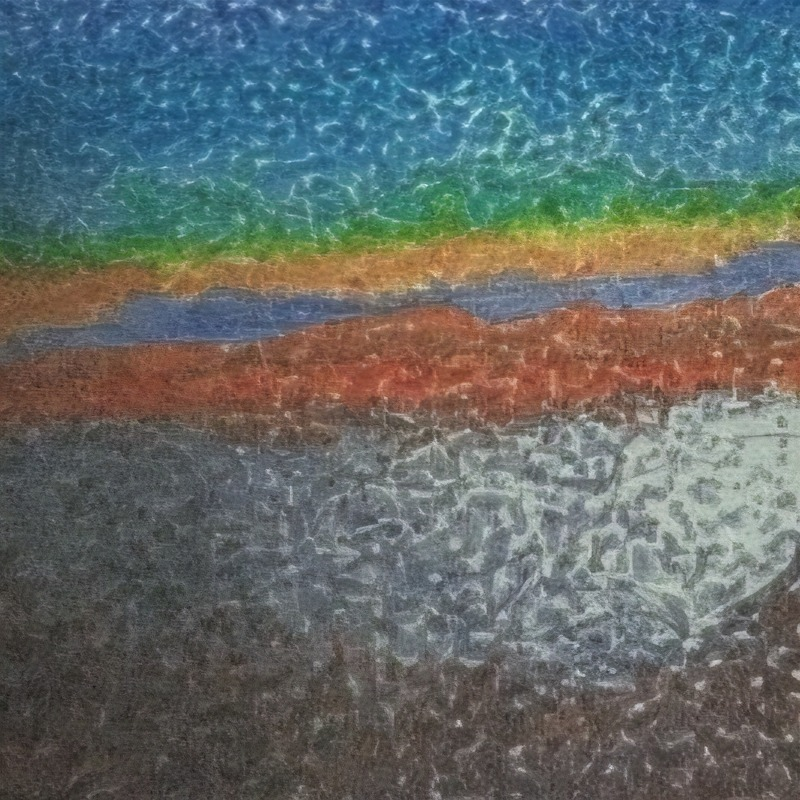
2026.04.10
Precious One
Sweethearting 직전에 발표한 풀 프로세스 싱글로, 작사·작곡·편곡부터 보컬 녹음, MIDI 프로그래밍, 믹싱·마스터링, 비주얼과 발매 운영까지 직접 수행했습니다.
INDEPENDENT ARTIST · PRODUCER · RELEASE OPERATOR
작사·작곡·편곡부터 보컬 녹음, MIDI 프로그래밍, 믹싱·마스터링, 뮤직비디오와 발매 운영까지 직접 수행해 온 조엄진의 음악 프로젝트 포트폴리오입니다.
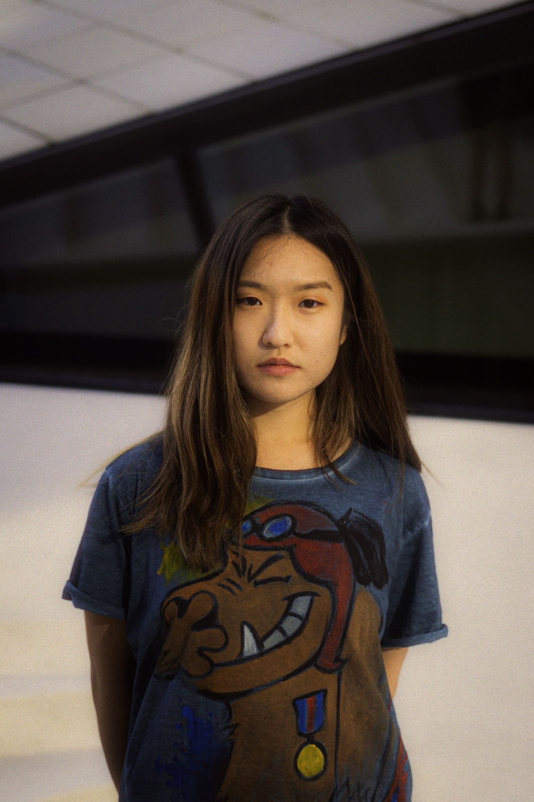
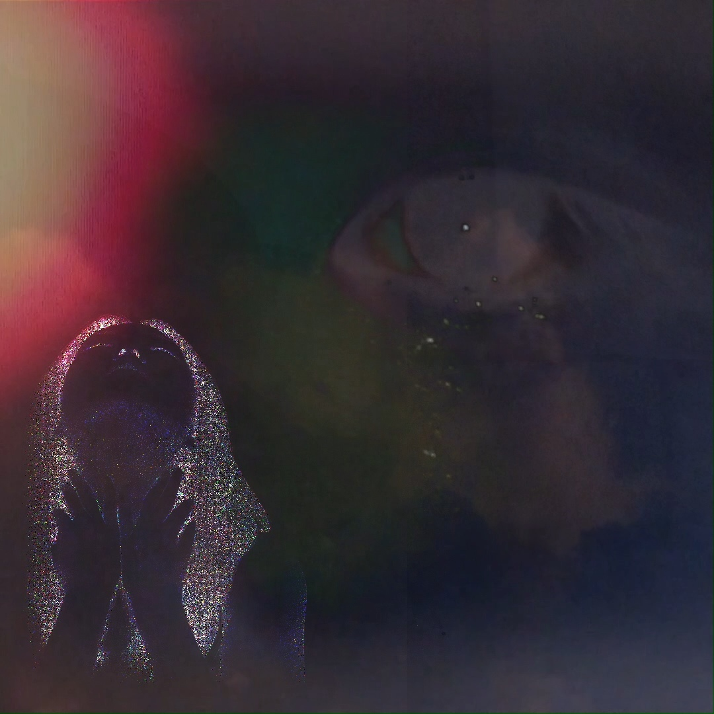
MAIN CASE STUDY · 2026.07.10
작사·작곡·편곡, 보컬 녹음, MIDI 프로그래밍, 프로덕션, 믹싱·마스터링, MV 콘셉트/편집, 발매 행정과 프로모션을 직접 수행했습니다.

2026.04.10
Sweethearting 직전에 발표한 풀 프로세스 싱글로, 작사·작곡·편곡부터 보컬 녹음, MIDI 프로그래밍, 믹싱·마스터링, 비주얼과 발매 운영까지 직접 수행했습니다.
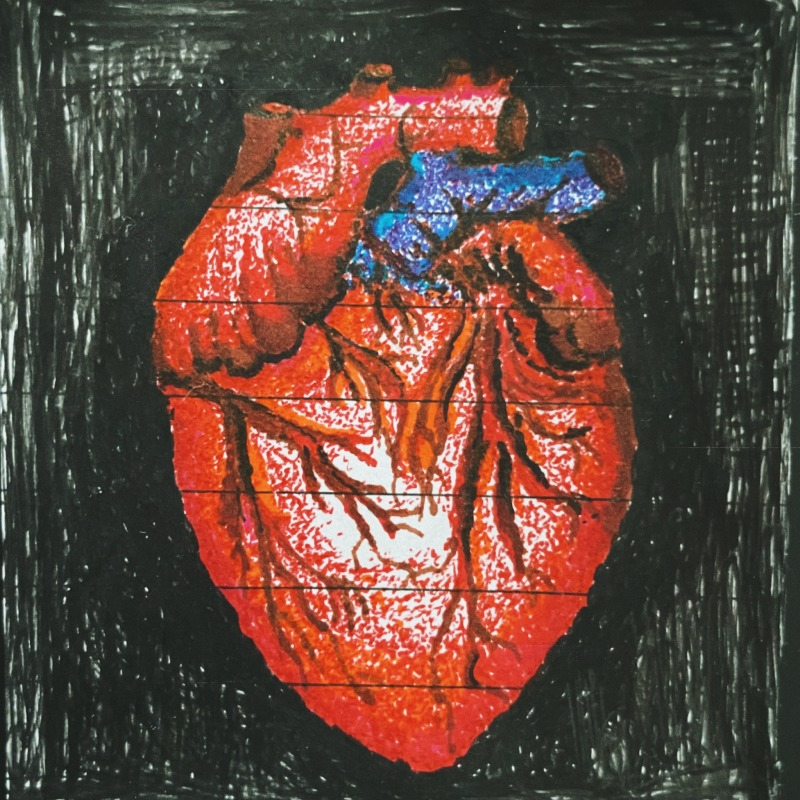
5-TRACK EP · 2021.06.17
전 트랙의 창작, 제작, 믹싱·마스터링, 비주얼과 발매를 직접 관리하며 앨범 단위의 일관성을 구축했습니다.
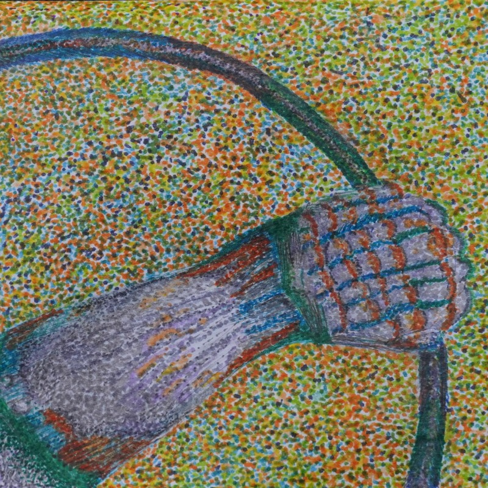
Bus Driver2023.03.28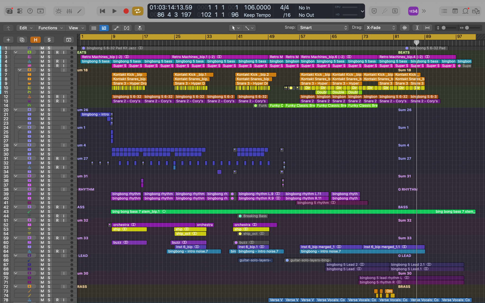
곡 구조, MIDI, 보컬과 효과 레이어를 세션 단위로 관리하고 버전별 차이를 비교합니다.
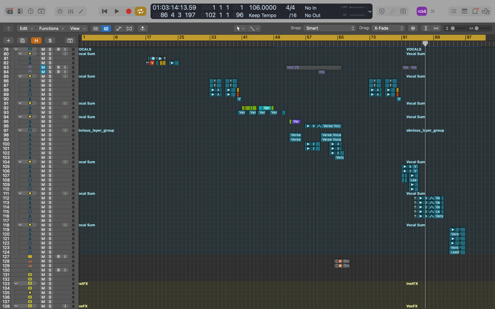
테이크 편집과 레이어 정리 후 음정·리듬·톤·공간감·가사 전달력과 전환 구간을 반복 검수합니다.
아티스트 정체성과 곡의 핵심 정서를 먼저 정의
수정 요청을 구간·이유·우선순위로 전달
파일, 크레디트, 등록정보와 공개물을 일관되게 관리
새로운 사운드나 편곡 아이디어를 추가할 때는 곡의 핵심 정서와 보컬 캐릭터를 먼저 확인합니다. 개별 요소가 흥미롭더라도 전체 흐름을 방해하면 덜어냅니다.
버전 비교 시 음정, 리듬, 톤, 공간감, 가사 전달력과 전환 구간을 기준으로 검수하고, 수정 요청은 구간과 이유를 명확히 정리합니다.
최종 파일, 크레디트, 등록정보, 비주얼과 공개 순서까지 일관되게 관리해야 프로젝트의 의도가 청취자에게 정확히 전달된다고 생각합니다.
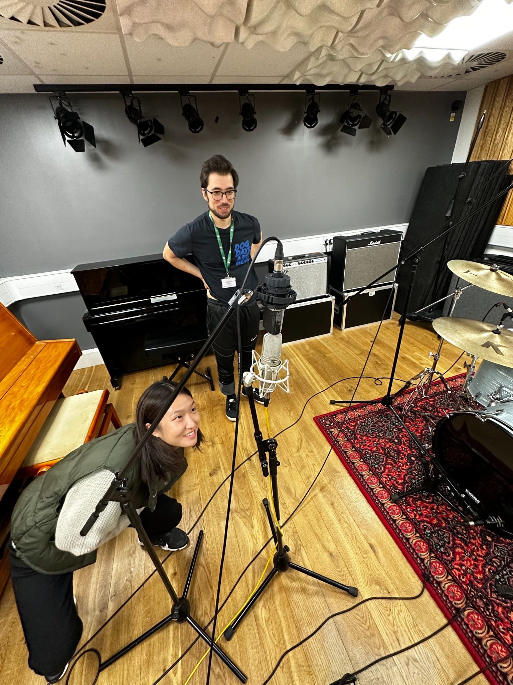
Bus Driver와 Big Hearts 관련 녹음·프로덕션 세션.
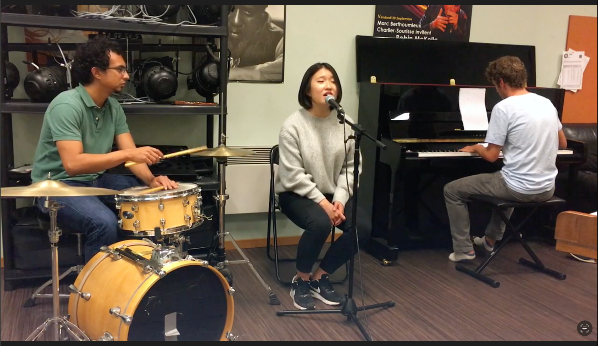
제네바에서 드러머·피아니스트와 보컬 리허설.
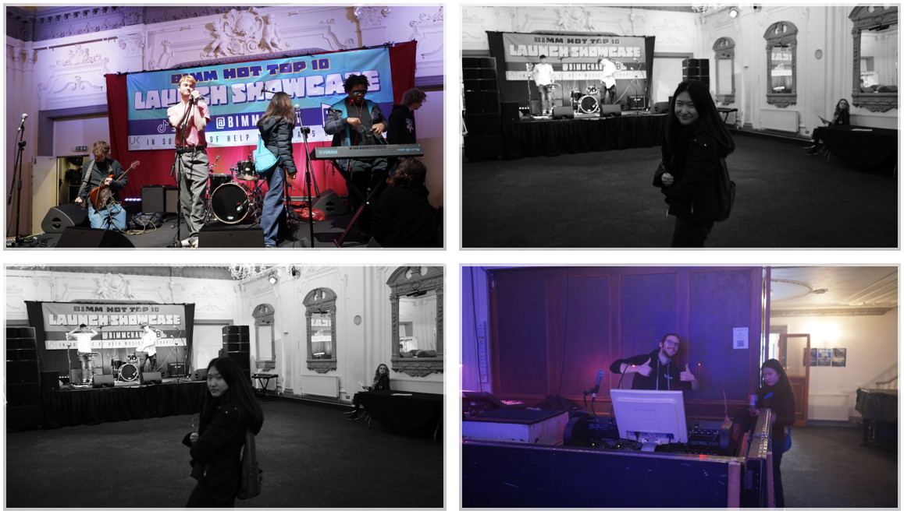
안전과 사운드 기술 운영 지원.
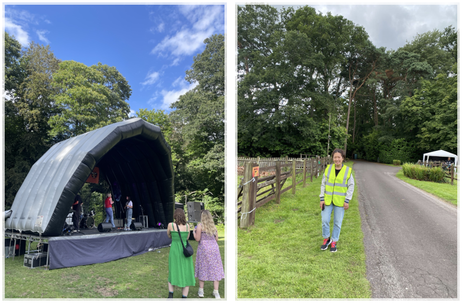
티켓팅, 주차와 행사 현장 운영.
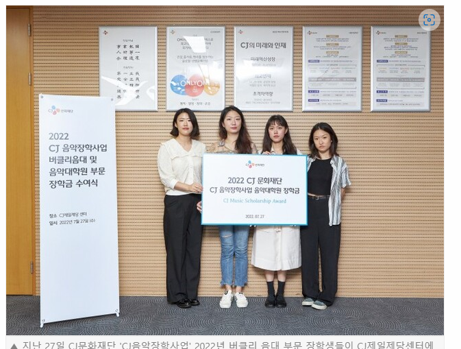
CREDENTIAL
Popular Music scholarship recipient · 2022